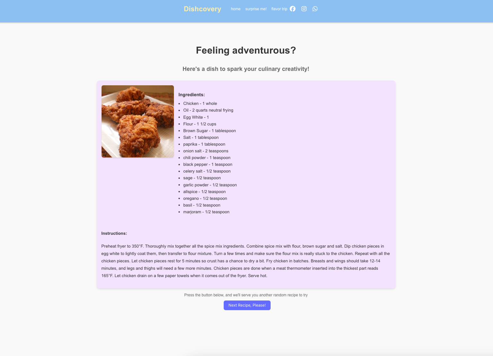
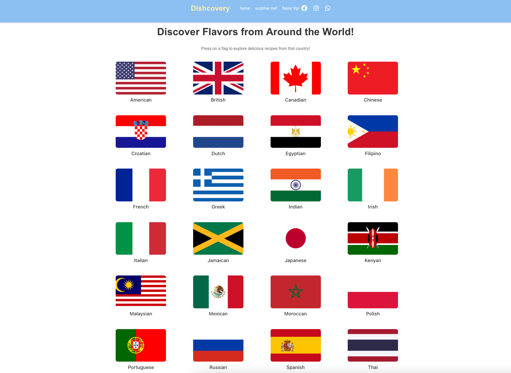

Projects
To see code files, press the github logo below!
Project 1: Build Your Own World
In this 2D tile-based world, players have the freedom to navigate the space, gather coins, and access a unique door
that leads to a mini-game, or they can choose to exit through a yellow door. Additionally, players have the option to
save their progress and reload their saved games. The worlds are generated procedurally using seeds, with each seed
creating a distinct environment where the placement of coins is randomized.

Short Codes for BYOW
Code below is the save and load part of the game.

Code below is responsible for the running of the game.

Project 2: NGordNet
Project that investigates the changes in the quantity of published materials in English over the years.
NGordNet organizes words into clusters of synonyms known as synsets and outlines the semantic connections between these words.
Among these relationships is the 'is-a' link, which associates a more specific term (hyponym) with a more general one (hypernym).
Short Codes for NGordNet
Code below represents a simple graph data structure.

Code below represents the relationships between words in a WordNet-like structure.

Project 3: Dishcovery
Dishcovery is a full-stack web application that allows users to search for recipes by keyword, explore meals from
different countries, and get randomly generated meal ideas. This project features a Node.js backend with Express.js,
a React.js frontend, and MongoDB for dynamic content delivery.
Key Features:
- Search Recipes: Enter a keyword to find meals with ingredients and instructions.
- Flavor Trip: Explore cuisines by selecting a country to view meals and recipes.
- Surprise Me: Get a random meal recommendation.
- Responsive Design: Optimized for both desktop and mobile.
Technologies Used:
- Frontend: React.js with TypeScript, TailwindCSS/Custom CSS
- Backend: Node.js, Express.js, MongoDB



Project 4: ReChord
ReChord is a full-stack web application that allows users to explore music, rate albums and songs, discover new releases, and engage socially with other users. The project integrates APIs for rich, dynamic content and offers a seamless user experience across multiple features.
Key Features:
- Reviews Page: Rate albums, songs, or artists and view detailed descriptions, average ratings, and popular genres with filtering options.
- News Page: Display the latest news about new songs, albums, and music industry updates.
- Social Page: Showcase user profiles, favorite songs or albums, followers, and following lists, along with rated items.
Technologies Used:
- Frontend: React.js with Tailwind CSS
- Backend: Node.js, Express.js, Firebase
- APIs: Spotify Web API, Last.fm API, News API